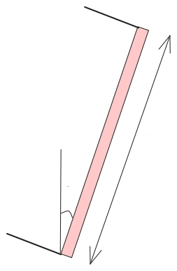

Fundamentals of Convective Heat Transfer
Summary (Live Session)
2025-10-12
Incompressible Flow Equations & Reynolds Transport Theorem
The governing equations for an unsteady, incompressible, newtonian and constant properties fluid are given in their vector form as
Continuity:
Momentum:
Reynolds Transport Theorem
Energy:
where is the viscous dissipation term
Boundary Layer Flow Equations
Continuity:
Neglecting the pressure gradient (flow over a flat plate) and after scaling analysis
Momentum:
Similarly, the energy equation is given by
Exact Solutions to Boundary Layer Equations
Similarity method to reduce governing equations to an ODE
Blasius Solution (Hydrodynamic boundary layer)
Pohlhausen Solution (Thermal boundary layer) for constant wall temperature
For constant wall heat flux, we have
Displacement thickness (accounting for loss in mass across the boundary layer)
Momentum thickness (accounting for loss in momentum after the displacement thickness)
Approximate Solutions to Boundary Layer Equations
Workflow:
- Integral form of governing equations
- Assume profiles satisfying the equations in 1
- Determine the unknown variables ()
Momentum Integral Equation
Energy Integral Equation (Constant Wall Temperature)
Solutions are close to exact solutions. However, the accuracy cannot be increased just by increasing the number of terms in the assumed profile
Internal Flows
Fully Developed Flow
| Uniform Wall Temperature |
|
|
| Uniform Wall Heat Flux |
|
|
Developing Flow (Uniform Wall Temperature)
| Parallel Plate Channel |
|
| Circular Channel |
|
| Couette Flow (isothermal top and bottom) |
, |
| Couette Flow (isothermal top and adiabatic bottom) |
and |
Richardson Number,
|
Natural |
|
Forced |
|
Mixed / Combined |
Conventionally we choose, such that
Summary of scaling laws
|
|
|
|
|
|
|
|
|
|
|
|
Natural Convection Correlations - Vertical Plates
 |
|
Entire Range |
|
|  |
|
|
Use vertical plate equations for the upper surface of a cold plate and lower surface of a hot plate
Replace by for |
Natural Convection Correlations - Between Parallel Walls
|
|
|
|
|
|
|
|
|
|
|
|
|
|
|
|
|
|
For air the simplified correlations are given below
Reynolds Averaged Navier Stokes Equations
Continuity equation:
x-momentum equation:
y-momentum equation:
x-momentum equation:
energy equation:
Reynolds Stress
Reynolds or turbulent stress is given by
Boussinesq eddy viscosity approximation:
where is the turbulent kinetic energy and is the eddy viscosity
Shear stress is thus given by
where and
Turbulent Intensity
The relative magnitude of the root mean square value of the fluctuating components with respect to the time averaged mean velocity
| High turbulence |
|
| Medium turbulence |
|
| Low turbulence |
|
| For laminar flow |
|
Turbulent Boundary Layer Equations
Thus, we have (5 unknowns) and 3 equations (above). So we need 2 more equations - Closure problem
are properties of the flow
Prandtl Mixing Length Theory
where is the von Kármán constant (approximately equal to 0.4)
Universal Turbulent Velocity Profile
Universal Turbulent Temperature Profile
For and
Integral Solution & Colburn Analogy
Momentum Integral Equation
The above equation when solved together with at gives .
is the profile taken from universal turbulent velocity profiles near the walls.
Colburn Analogy
where is the local Stanton number and is obtained by solving the momentum integral equation.
Laminar film condensation on a vertical plate
liquid film thickness,
liquid film velocity,
liquid mass flow rate per unit width,
liquid film temperature,
Local Nusselt number:
where
Mean Nusselt number:
Laminar Film Condensation on Horizontal Tubes
Condensation rate
Average heat transfer coefficient

{kind=link}


{kind=link}


{kind=link}